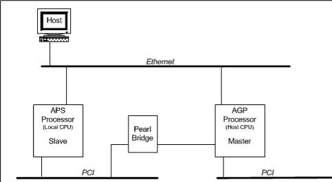

Proprietary to General Electric
Direction 5500113, Rev# 3
Discovery MR450 1.5T Service Methods
Module Version 1.0, Version Date 4/26/07
Proprietary to General Electric |
Diagnostics >> MGD Chassis >> MGD Data Paths
This diagnostic validates the functional requirements of the Bridge board as controlled by the APS processor.
The diagnostic performs three tests.
First, the diagnostic confirms that the Bridge board’s registers are accessible from the APS processor by performing write/read/verify tests to the Bridge board’s scratchpad registers.
Second, the diagnostic confirms that the Bridge board can transfer data between the two PCI busses. Using the Ethernet connection, the APS requests a block of memory on the AGP processor board. Then, the APS writes data to the AGP via the Bridge board. Then, the data is read back and verified.
Lastly, the diagnostic confirms that doorbell interrupts from the AGP can be propagated to the APS board via the Bridge board.
Bridge board's configuration registers.
Data throughput - movement of data through the bridge board without data loss.
Doorbell interrupts - doorbell interrupts from the AGP-side are detected by the APS processor.
Minimum Configuration
Host computer
APS Processor
AGP Processor
MGD Chassis
Bridge Board
Ethernet Connection
Illustration 1: APS - Bridge Functional Block Diagram

Select the diagnostic.
Select either short or long (see Section 8 for details)
Click [Run].
| NOTE: | The Test Options settings should not be changed from their default settings unless instructed to do so by a GE Healthcare engineer. There are very few circumstances when these settings ever need to be changed. |
Output values are judged pass or fail. In the event of failure, the details of the failure can be found in the GE System Log.
Although, in the case of errors you can click the 1st Error number to see the nature of the error, it is recommended that you view the GE System Log to view all the errors that were recorded.
One testing option for this diagnostic pertains to the test versions of short or long. The short version tests a smaller set of scratchpad registers and doorbell interrupts, and roughly 2000 words of throughput, whereas the long version tests the available scratchpad registers and doorbell interrupts, and roughly 250,000 words of throughput.
Click [Calculate Time] to get an estimate of the time it will take to run the selected diagnostics.